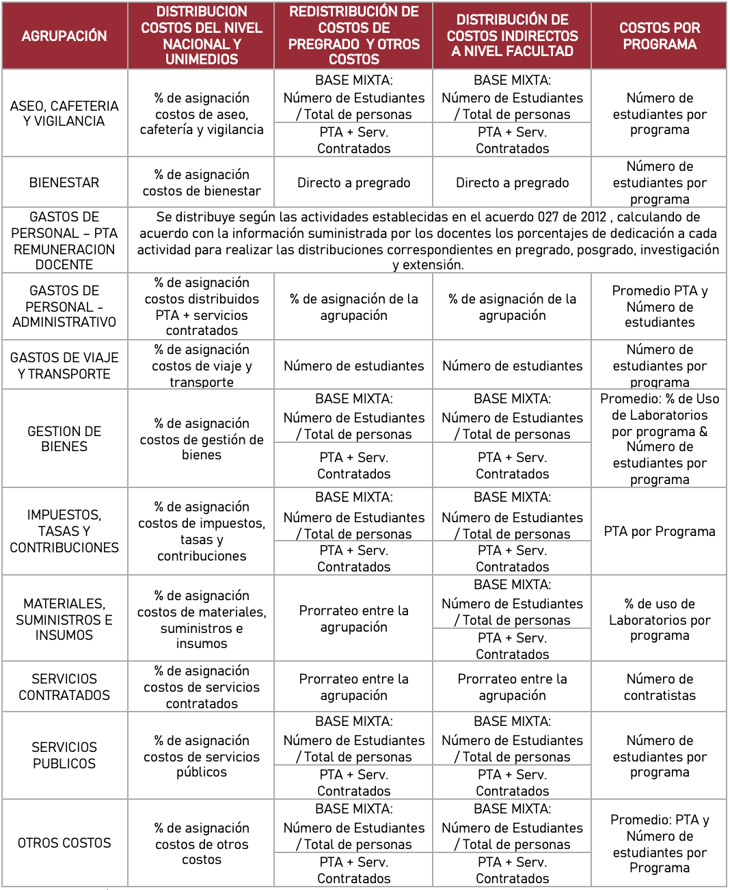
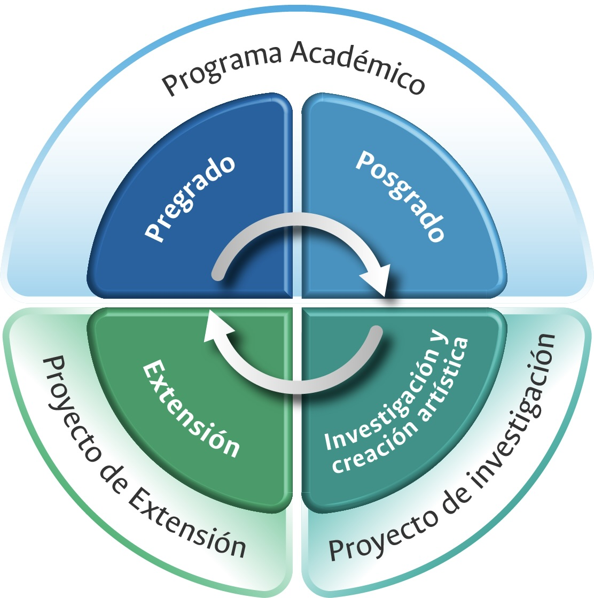
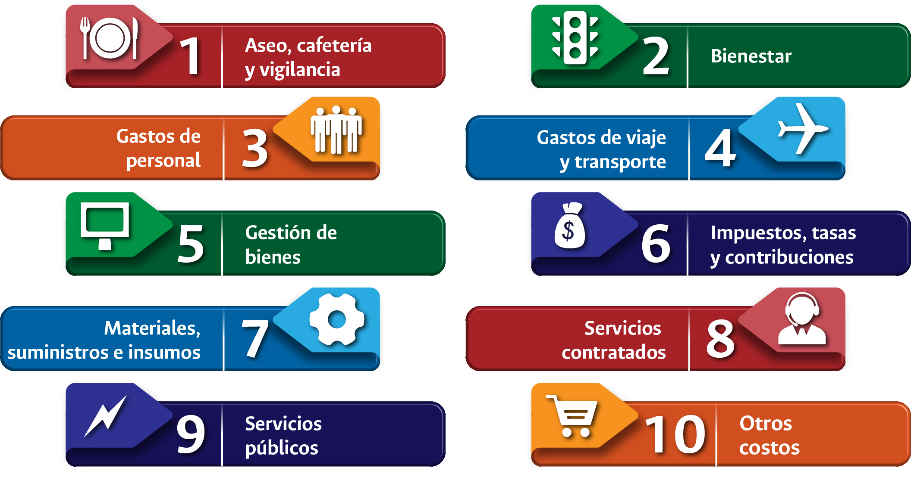

4 Metodología de implementación del sistema de costos en la Universidad Nacional de Colombia
A continuación, se presentan las generalidades de la metodología para la determinación de los costos de las actividades misionales de la Universidad en sus diferentes niveles y según su estructura organizativa y administrativa:
Sede: Constituye el máximo nivel de agregación del sistema de costos de la Universidad, el objetivo de este costeo es conocer los costos totales de cada una de las sedes distribuidos en las cuatro actividades misionales de la Universidad, pregrado, posgrado, investigación y extensión. Los costos a Nivel de sede incluyen los costos propios de la sede (reconocidos en los estados financieros de la sede) más los costos asignados del Nivel Nacional, más los costos asignados de Unimedios.
Facultad: Constituye el segundo nivel de desagregación del sistema de costos de la Universidad, el objetivo del mismo es conocer los costos de cada una de las facultades que componen las sedes, distribuidos en las actividades misionales de pregrado, posgrado, investigación y extensión. Los costos a nivel de facultad incluyen los costos propios de la facultad reconocidos directamente en las cuentas de pregrado, posgrado, investigación y extensión (directos), más los costos asignados a la facultad de los niveles centrales de las sedes, más los costos asignados del Nivel Nacional y de Unimedios.
Programas: Este nivel es el máximo nivel de desagregación de los costos en relación con las actividades misionales de pregrado y posgrado, el objetivo de este costeo es conocer los costos totales de cada uno de los programas académicos ofertados por la Universidad, al igual que el costo por estudiante de dichos programas. Los costos a nivel de programas incluyen los costos de facultad redistribuidos de acuerdo con los inductores definidos, más los asignados de los niveles centrales de facultad, más los costos asignados del Nivel Nacional y de Unimedios.
4.1 Actividades misionales
El modelo define a las actividades misionales como aquellas que son propias de la naturaleza de la Universidad, se reconocen como actividades misionales la docencia (en adelante pregrado y posgrado) la investigación y la extensión, dado que por las dinámicas mismas del proceso de formación sus costos deben ser determinados de forma independiente, como se presenta en el siguiente gráfico.

4.2 Agrupaciones
El modelo de costos toma como base la información contable registrada en los estados financieros a cierre de vigencia de las cuentas de clase 5, 6 y 7, Gastos, Costos de ventas, Costos de transformación, las cuales son clasificadas en agrupaciones definidas para la implementación del modelo. Es importante mencionar que los costos para las actividades misionales de pregrado y posgrado se calculan anualmente, correspondiendo a dos periodos académicos (dos semestres académicos).
De esta manera, las agrupaciones de registros individuales de costos tienen el propósito de asociar o reunir conceptos contables similares en categorías amplias, que facilitan el procesamiento y la lectura de la información y la aplicación adecuada de los inductores definidos para realizar la asignación y/o distribución de los costos entre las diferentes actividades misionales de la universidad.

4.3 Tipo de agrupaciones
4.3.1 Aseo, cafetería y vigilancia
En esta agrupación se recogen las erogaciones relacionadas con los servicios de aseo, cafeteria y vigilancia y seguridad de las diferentes instalaciones de la Universidad, comprende subcuentas como:
- Elementos de cafetería y víveres.
- Útiles de aseo.
- Lavandería.
- Artículos y suministros de agricultura, jardinería y granjas.
- Servicios de aseo.
- Vigilancia y seguridad.
4.3.2 Bienestar
Comprende las erogaciones relacionadas con el funcionamiento del Bienestar Universitario la cual “…trabaja por el mejoramiento continuo de la calidad de vida de la comunidad universitaria y por el desarrollo de sus potencialidades en las dimensiones afectiva, espiritual, socio-económica, física y artística, aplicando criterios de equidad y solidaridad que favorezcan la convivencia y la práctica de los valores institucionales.” (Universidad Nacional de Colombia. Bienestar Bogotá 2023). Entre los costos de bienestar se encuentra:
- Gastos de bienestar estudiantil.
- Servicio médico estudiantes.
- Premios, trofeos, presentaciones.
- Eventos culturales y deportivos.
- Capacitación.
- Gastos de bienestar social.
- Seminarios, eventos y congresos.
- Apoyo estudiantes en actividades académicas.
- Comisiones.
- Seguridad industrial.
- Condonación préstamo estudiantes.
- Descuento resolución 939/93 (préstamos estudiantiles).
- Becas posgrado.
- Aportes a riesgos profesionales estudiantes de posgrado.
- Aportes a salud estudiantes de posgrado.
- Préstamos condonables - Colciencias.
- Pro deporte municipal.
4.3.3 Gastos de Personal
Comprende la totalidad de las erogaciones realizadas, en virtud de los contratos laborales suscritos entre la Universidad y los docentes (de planta y ocasionales) así como los funcionarios administrativos, de acuerdo con la normatividad externa e interna vigente. Dentro de los gastos de personal se encuentran los siguientes conceptos:
- Gastos de representación.
- Personal supernumerario.
- Contratos de personal temporal.
- Becarios.
- Prima de vacaciones.
- Prima de navidad.
- Prima de antigüedad.
- Vacaciones.
- Bonificación.
- Cesantías.
- Intereses sobre las cesantías.
- Estímulos académicos.
- Capacitación.
- Dotación y suministros a trabajadores.
- Viáticos y gastos de viaje.
- Bonificación por servicios prestados.
- Bonificación por productividad académica.
- Prima de servicios.
- Bonificación acuerdo 058 CSU.
- Monitorias.
- Incapacidades.
- Riesgos laborales.
- Aportes a cajas de compensación familiar.
- Aportes a seguridad social.
- Cotización ent. Adm. Régimen prima media.
- Cotización ent. Adm. Régimen de ahorro individual.
- Aportes al instituto colombiano de bienestar familiar.
- Bonificación especial por recreación.
- Sueldos de personal.
- Auxilio funerario.
Teniendo en cuenta la importancia y relevancia de las cifras derivadas del reporte Programa de Trabajo Académico (PTA) en la implementación práctica del modelo, se ha tomado la decisión de dividir esta agrupación en dos categorías: el PTA - Programa de Trabajo Académico, que abarca las actividades de los docentes en las funciones académicas misionales, y los Gastos de personal administrativo, que incluyen los demás gastos relacionados con el personal de la universidad.
4.3.4 Gastos de viaje y transporte
Comprende los pagos realizados por conceptos de gastos de viaje, transportes y afines:
- Transporte urbano.
- Viáticos.
- Mensajería.
- Portes aéreos y terrestres.
- Embalajes, acarreos y fletes.
- Gastos de viaje.
- Comunicación y transporte.
- Gastos de operación aduanera.
4.3.5 Gestión de bienes
Comprende las erogaciones realizadas para la adquisición, mantenimiento y aseguramiento de los bienes, así como el costo reconocido contablemente por la pérdida de valor de los mismos causada por su uso (depreciación, amortización):
- Reparación y mantenimiento.
- Seguros de bienes.
- Depreciación de edificaciones.
- Depreciación de plantas, ductos y túneles.
- Depreciación de redes, líneas y cables.
- Depreciación de maquinaria y equipo.
- Depreciación de equipo médico y científico.
- Depreciación de muebles, enseres y equipo de oficina.
- Depreciación de equipo de comunicación y computación.
- Depreciación de equipo de transporte, tracción y elevación.
- Depreciación de equipos de comedor, cocina, despensa y hotelería.
- Depreciación de semovientes.
- Amortización de semovientes.
- Amortización de intangibles.
- Depreciación bienes de arte y cultura.
4.3.6 Impuestos, tasas y contribuciones
Corresponde a los pagos de los diferentes tributos, así como la cuota de fiscalización y auditaje a favor de la Contraloría General de la República:
- Peajes.
- Contribución Supervigilancia.
- Gravamen a los movimientos financieros.
- Contribuciones – Estampillas.
- Otros impuestos.
- Cuota de fiscalización y auditaje.
- Impuesto predial unificado.
- Otras tasas.
- Impuesto sobre vehículos automotores.
- Multas.
- IVA por adquisición de bienes y servicios.
4.3.7 Materiales, suministros e insumos
En esta agrupación se reúnen las erogaciones que realizan los diferentes fondos de la Universidad para la adquisición de materiales necesarios para ser usados o transformados en el desarrollo de las actividades de académicas de pregrado, posgrado, investigación y extensión. Dentro de materiales, suministros e insumos se encuentran los siguientes conceptos:
- Materiales.
- Consumos controlables.
- Materiales y suministros.
- Materiales y gastos de fotografía.
- Materiales de imprenta.
- Repuestos y accesorios.
- Útiles de escritorio.
- Encuadernación y empaste.
- Vidriería y otros elementos de laboratorio.
- Combustibles, lubricantes y gas vehicular.
- Materiales de educación.
- Drogas, artículos y materiales médicos, dentales, veterinarios y de laboratorio.
- Material didáctico.
- Reactivos y químicos.
- Alimentos para animales.
- Semovientes y productos de experimentación.
- Fotocopias.
- Avisos, impresos y publicaciones.
- Materiales de audio y video.
- Implementos deportivos.
- Productos alimenticios.
- Artículos y suministros de agricultura, jardinería y granjas.
4.3.8 Servicios contratados
Corresponde a los costos relacionados con la contratación de terceros, comprende:
- Remuneración por servicios técnicos.
- Honorarios.
- Aportes a riesgos laborales contratistas.
- Estímulos - servicios académicos remunerados - SARES.
4.3.9 Servicios públicos
Hacen referencia a los pagos realizados para cubrir los gastos por servicios públicos en las diferentes instalaciones de la universidad, dentro de este rubro también se ha incluido el costo de la Red Wan:
- Servicio de alumbrado y energía eléctrica.
- Servicio de acueducto y alcantarillado.
- Servicio telefónico.
- Celular.
- Red de Internet.
- Red WAN.
- Uso espectro.
- Gas.
- Transmisión teleconferencias.
4.3.10 Otros costos
Reúne todas las partidas que se deben incluir en el modelo de costos pero que por sus características no es posible ubicar en alguna de las agrupaciones previamente mencionadas, tales como:
- Suscripciones a bases de datos.
- Gastos legales.
- Gastos bancarios.
- Licencias y salvoconductos.
- Pérdida en Venta de bienes.
- Suscripciones, afiliaciones y cuotas de sostenimiento.
- Alquiler de líneas y aparatos.
- Otros costos del servicio.
- Costas procesales.
- Litigios.
- Otros deudores.
- Mecanismos alternativos de solución de conflictos.
- Suscripciones y afiliaciones.
- Reclamaciones e indemnizaciones.
- Convenios de cooperación, uniones temporales y consorcios.
- Seguros (diferentes a gestión de bienes).
- Elementos de culto.
- Costos tienda universitaria.
4.4 Inductores o direccionadores de costos
El diseño del modelo de costos requiere, entre otras cosas, la definición de los inductores de costos, estos son los factores que permiten llevar a cabo la asignación de los costos a los objetos del costo dentro del modelo a través de un prorrateo, la (Contaduría General de La Nación. Marco de Referencia Para La Implantación Del Sistema de Costos En Las Entidades Del Sector Público 2008, 48), define los direccionadores o inductores de costos, así:
“Direccionador de costos. En la literatura de costos se le ha dado diferentes nombres a este concepto: inductor, conductor, base de asignación, base de distribución, direccionador o cost driver. Es un criterio de aplicación o distribución de costos el cual determina cómo se distribuyen los recursos de la entidad a las actividades y objetos de costo o las actividades y algunos recursos a los objetos de costo finales, la función principal de un direccionador es facilitar una distribución razonable y objetiva de los costos en todos los niveles de la organización”.
Un inductor o direccionador puede ser financiero o no financiero, adicionalmente, las organizaciones pueden determinar un único direccionador, o múltiples de acuerdo con las características del proceso (Horngren C. 2002).
De acuerdo con lo citado, para la distribución de los costos en las diferentes actividades misionales de la Universidad Nacional de Colombia el modelo ha determinado diferentes inductores, los cuales han presentado ajustes y/o variaciones producto de los análisis realizados a la información generada de la aplicación del mismo durante las vigencias 2015 al 2021, lo cual se considera ha generado mejoras en la utilización de los mismos. En el presente documento se hace referencia solo a los inductores que actualmente se usan para cada agrupación de costos, luego de la aplicación del modelo durante varios años consecutivos.
4.4.1 Inductores utilizados en el desarrollo del modelo
En el marco del sistema de costos, teniendo en cuenta, entre otros, la reducción de las agrupaciones de costos, a diez categorías, la tabla 4.1 muestra el detalle de los inductores definidos en el modelo de costos que permiten llevar a cabo la reasignación de costos a las actividades misionales de pregrado, posgrado, investigación y extensión para cada una de las agrupaciones:
A continuación, se explican los tipos de inductores citados en la tabla anterior:
4.4.1.1 Base mixta
Se aplica para las agrupaciones aseo, cafetería y vigilancia; gestión de bienes; impuestos, tasas y contribuciones; otros costos; servicios públicos; y materiales, suministros e insumos como inductor el denominado “Base Mixta”.
Se definió este inductor toda vez que se había utilizado inicialmente el número de estudiantes, pero producto de los análisis realizados a la aplicación del modelo se determinó que el mismo no estaba respondiendo a la necesidad de asignar los costos en los casos de las distribuciones realizadas para Investigación y Extensión, dado que en estas actividades no se encuentran estudiantes matriculados. Posteriormente, se usó un inductor conformado por los costos de personal más servicios contratados, encontrándose que el mismo no tenía en cuenta el número de estudiantes en cada sede.
La asignación de costos por medio de una base mixta, se ha definido en dos pasos:
El primer paso es distribuir los costos, partiendo del número total de personas: docentes, estudiantes, administrativos y contratistas. En los que, utilizando la proporción de estudiantes, en un primer paso se distribuyen aproximadamente el 80% de los costos (de acuerdo con la relación entre el número de estudiantes y el total de la comunidad académica de cada sede) entre las actividades misionales de pregrado y posgrado, utilizando el inductor “Número de Estudiantes”.
Luego, en un segundo paso, se distribuye aproximadamente el 20% de los costos restantes con el inductor “PTA (Programas de Trabajo Académico) + Servicios Contratados”, los cuales serán distribuidos entre las cuatro actividades misionales de la Universidad Nacional de Colombia.
Para la construcción del inductor se requiere disponer de la siguiente información:
Número de estudiantes: Se solicita a la Dirección Nacional de Planeación y Estadística la información correspondiente al número de estudiantes de pregrado y posgrado. Cabe mencionar que se toma el promedio de estudiantes de los dos semestres académicos.
Número de docentes y administrativos: la División Nacional de Personal Académico y Administrativo suministra para cada sede, la conformación y el número total de funcionarios de los estamentos docente y administrativo de la Universidad.
Número de contratistas y valor por contrato: esta información es solicitada a Área de Gestión Estratégica y Adquisiciones, quienes suministran el número de órdenes de prestación de servicios por sede y por empresa celebradas en la vigencia.
Costos de nómina docentes: esta información es suministrada por la Dirección Nacional de Personal Académico y Administrativo discriminada por sede y facultad.
4.4.1.2 Directo a pregrado
Para los costos de la agrupación “Bienestar” se determinó, no hacer redistribución a través de un inductor, y por el contrario dejar el total del valor en pregrado, lo anterior teniendo en cuenta que las actividades de extensión, investigación, y posgrados, tienen costos relacionados con bienestar registrados contablemente, observando que las cuentas contables registradas son coherentes con la actividad misional. Adicionalmente, la Universidad ha determinado que en su mayoría los servicios de bienestar son usados por los estudiantes de pregrado.
4.4.1.3 Número de estudiantes
Para las agrupaciones como aseo, cafetería y vigilancia, gastos de viaje y transporte, servicios públicos, entre otros, se determinó como inductor el número de estudiantes, debido a que interpreta de mejor manera las personas que se relacionan con los costos presentes en estas agrupaciones. Se toma como inductor el número de estudiantes de pregrado y posgrado dependiendo el nivel en el que nos encontremos del costeo (sede, facultad o programa) y luego se determina la proporción que corresponde a cada una de estas actividades para la distribución total de la agrupación.
4.4.1.4 Prorrateo entre la agrupación
Respecto a las distribuciones de las agrupaciones “Materiales, Suministros e insumos” y “Servicios contratados” de la distribución redistribución de otras costos y costos de pregrado, se ha designado al como direccionador del costo a costo total de la agrupación para las cuatro actividades misionales, generando así el porcentaje de participación de cada una, con el cual se reasigna el costo de pregrado a toda la agrupación.
Esta información se obtiene a través del SGF – QUIPU y corresponde al total de los costos registrados en las cuentas contables que componen la agrupación Servicios Contratados, en cada una de las sedes y facultades.
4.4.1.5 Porcentaje de asignación
Este inductor se utiliza para distribuir los costos del Nivel Nacional y Unimedios reconocidos en cada una de las agrupaciones, entre las sedes andinas, sedes de presencia nacional y las unidades de gestión Editorial, Unisalud, Fondo Pensional, Unimedios, y Regalías en el caso de los costos del Nivel Nacional; y para los costos de Unimedios los mismos se distribuyen entre las sedes andinas y de presencia nacional.
En esta distribución se utiliza una tasa de asignación en términos porcentuales que contempla la participación de cada agrupación en los costos incurridos por el Nivel Nacional y Unimedios de tal manera que se distribuyan la totalidad de los costos de dichas unidades de gestión de acuerdo al concepto y naturaleza.
4.4.1.6 PTA por programa
Este inductor se usa a nivel de costos por programa y contempla la participación porcentual de los costos del programa de Trabajo Académico correspondiente a cada programa curricular para asignar los costos de la agrupación “Impuestos, tasas y contribuciones”.
4.4.1.7 Porcentaje de uso de laboratorios
La información correspondiente al uso de laboratorios es suministrada por cada una de las facultades; ésta detalla la facultad, el nivel de formación, el programa (pregrado y posgrado) y los porcentajes de uso de los laboratorios. Con dicha información se asignan los costos de la agrupación “materiales, suministros e insumos” dentro de cada uno de los programas de pregrado y posgrado.
4.4.1.8 Numero de contratistas
Este inductor se encuentra designado a la agrupación “servicios contratados” a nivel de costos por programa y permite determinar la dedicación y apoyo de los trabajadores al interior de las facultades en actividades de misionales de pregrado y posgrado.